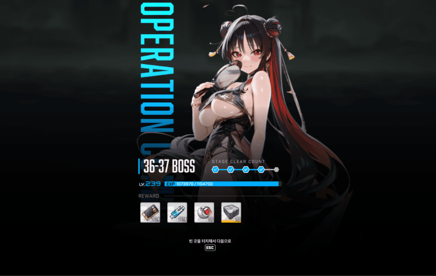
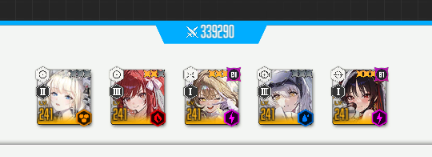
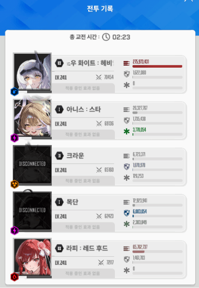

클리어 당시 투력

30초 남기고 넉넉하게 잡았고 죽은 것도 실수로 죽은거라
투력 33만 넘기면 충분히 깰듯
무기한최저 1등부터 끝까지 전부다 헬름 들어가있는데
나처럼 헬름이 투력 4만따리 깡통이고, 아니스 투력 높아서 목단 단독으로 쓰기 아쉬운 사람은
돌니스 재진입 힐로 충당하면서 충분히 깰만 한거같음
택틱이랄거는 딱히 없는데 저지만 적당한 타이밍에 해서 버스트 조절하면 됨
나는 흑련, 브래디같은 분배딜러를 안 넣었기 때문에 분신 타이밍 맞춰 버스트 켜야 목단이 버티는 사이에 분신들 잡을 수 있었음
그리고 분신 잡으면 바로 전체기 날라오니까 영상처럼 분신 바로 잡아서 죽지 말고 분신 하나만 잡아두고 버스트 타이밍 맞춰서 남은거 처리하면 절대로 안 죽고 3분 완주 가능할듯
딜은 어차피 각설이 다하니까 라피 자리에는 제일 잘 키운 3버 넣으면 됨 이 영상 올릴 적에는 수렐루 출시 전인데 라피 대신 수렐루 넣어도 가능
흑련 넣고 깨는 사람은 분신 타이밍에 흑련 버스트가 오게끔 세팅만 하면 분신 바로 뒤지고 목단 버스트 끝나기 전에 전체기 쏴서 안전성+시간절약 가능